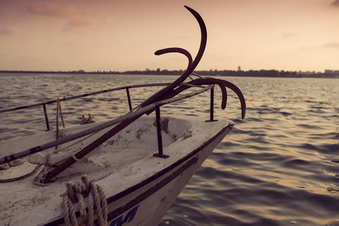
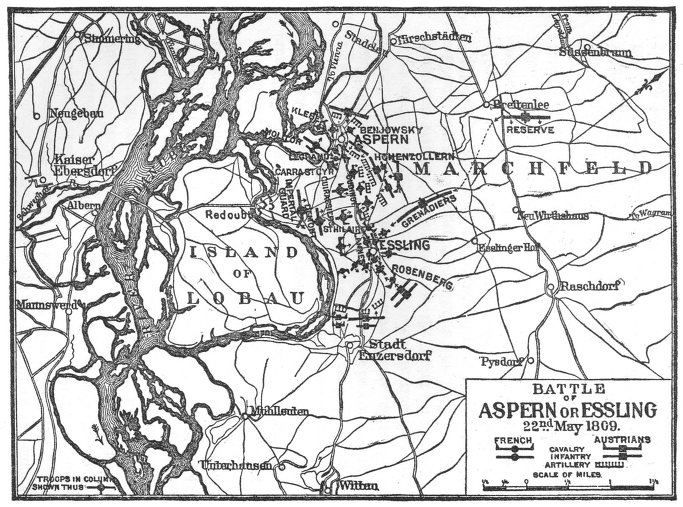
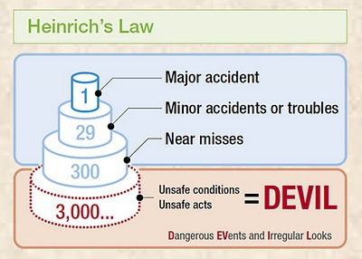
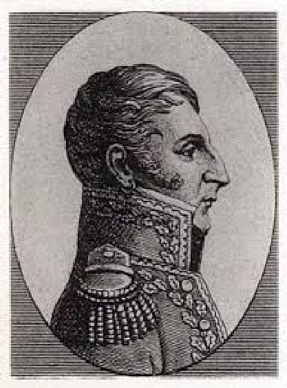
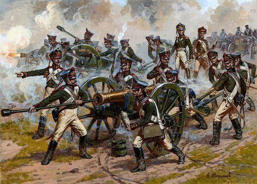

아스페른-에슬링 8편 - 우연 또는 필연
게시: 2017-03-26T21:14:40+09:00
5월 22일 오전 8시에 부교가 끊어졌다는 보고를 받은 나폴레옹의 안색은 상당히 침착했다고 합니다. 여기에 대해서는 대영웅다운 침착함이다 아니다 상황이 얼마나 심각한지 인식을 못한 것이다 등등 말이 많습니다만, Harold Parker의 'Three Napoleonic Battles'라는 책의 주석에 나온 설명에 따르면, 사실 이날 부교는 한번이 아니라 두번 끊어졌다고 합니다. 처음에는 7시에 작은 규모로 끊어졌고 이는 곧 수리될 수 있었으나, 곧 이어 9시에는 도저히 그날 중으로는 수리가 안 될 지경으로 크게 부서졌다는 것입니다. 아마도 오전 8시 경 나폴레옹이 받은 보고는 그 첫번째의 대수롭지 않은 파손 소식이었을 것입니다. 여러 책과 인터넷 사이트마다 몇 시 경에 다리가 끊어졌는지에 대한 설명이 제각기 다른데, 당시 현장에 있던 사람들의 기록도 제각기 다르니 어쩔 수 없는 일입니다.
부교, 정확하게는 프랑스군의 도하 기지라고 할 수 있는 도나우강 우안의 카이저에버스도르프와 롭그룬트 섬을 연결하는 긴 부교가 파괴된 원인에 대해서도 이야기가 다 일치하는 것은 아닙니다. 부교라는 것 자체가 근본적으로 그다지 튼튼한 물건이 아닌데다, 든든한 부교를 위해서 반드시 필요한 부품, 즉 닻이 없는 상황에서 포도탄과 어부들의 통발로 대충 만든 대용품으로 건설한 부교이다보니, 그냥 스스로 무너져 내렸다고 보는 시각도 있습니다. 특히 슈바르츠발트에서 예년보다 일찍 눈이 녹으면서 평소라면 6월에나 있을 도나우 강의 범람이 일찍 시작되어 물결이 무척 거셌고, 또 뿌리 뽑힌 나무나 나무가지 더미 같은 잡동사니들도 많이 떠내려 왔다는 점을 생각하면 개연성이 있는 이야기입니다.

(닻이라는 물건은 자동차에서 브레이크처럼 중요한 물건입니다. 특히 부교처럼 항해보다는 정박이 중요한 임무인 보트에게 있어서, 닻은 무엇보다 중요한 부품이었습니다. 잔잔한 물결에서는 어부의 통발에 쇳덩이를 대충 쟁여 넣은 것도 제 역할을 할 수 있었을지 모르지만, 거센 물결에서는 튼튼한 닻이 꼭 필요했습니다.)
반면에 이렇게 부교가 끊어진 것은 카알 대공의 원대한 작전 계획에 나폴레옹이 완전히 말려든 결과라는 시각도 있습니다. 상식적으로 강을 건너 공격해오는 적을 격퇴하는 가장 좋은 시나리오는 적이 절반 정도만 강을 건넌 상태에서 공격하는 것입니다. 적이 양분된 상태에서 각개격파하는 것은 모든 지휘관이 꿈꾸는 일인데, 강이 그렇게 적을 양분해주니 당연한 일이지요. 특히 적이 부교를 이용해 강을 건너려는 경우 그 부교를 끊어놓는다면 이미 강을 건넌 적은 독 안에 든 쥐 신세로 만들어 전멸시키는 것도 가능했습니다. 따라서, 카알 대공이 일부러 도나우 강 좌안을 비워둔 뒤, 미리 준비해둔 통나무나 무거운 돌을 실은 보트들을 급류에 떠내려 보내서 부교를 파괴했다는 것이 무척 그럴싸한 이야기로 생각됩니다. 5월 22일 운명의 아침에 부교가 크게 부서진 것은 확실히 오스트리아군이 일부러 떠내려보낸 대형 보트 때문이라고 합니다. 커다란 보트에 큼직한 물레방아를 통째로 실은 보트 하나가 급류에 떠내려 와 프랑스군의 부교를 들이 받았고, 이로 인해 부교를 구성하던 여러 척의 바지선이 떠내려가버린 것입니다.
하지만 구체적으로 생각해보면 이 모든 것이 카알 대공의 작전은 아니라고 생각됩니다. 먼저, 부교를 끊어서 다부의 제3 군단이 도하하지 못하게 하는 것은 카알 대공이 바라는 바가 아니었습니다. 애초에 이 달갑지 않은 전쟁은 카알 대공이 애써 키워놓은 군단들을 재정 문제로 인해 해체해야 할 상황이었기 때문에 시작된 것이었습니다. 때문에, 자국 땅에서 싸우고 있는데도 불구하고 이 전쟁이 길어지면 길어질 수록 불리한 것은 오스트리아군이었습니다. 카알 대공이 이번 전투에서 바라는 바는 나폴레옹과 건곤일척 후회없는 일전을 벌여 망하든 흥하든 추가적인 전투가 없도록 전쟁을 끝내는 것이었습니다. 그런데 여기서 부교가 끊어져 다부의 제3 군단이 강을 건너지 못한다면, 나폴레옹은 패배한다고 해도 부교 핑계를 대고 패배를 인정하지 않을 것이고, 이는 다시 대규모 병력과 물자의 희생을 동반하는 제2, 제3의 전투로 이어질 것이 뻔하다고 카알 대공은 생각했습니다. 카알 대공이 강변을 텅 비워놓았던 것은 뭔가 계책이 있어서가 아니라, 정말 나폴레옹에게 변명의 여지가 없는 패배를 안겨주기 위함이었습니다.
또한, 설령 오스트리아군이 의도적으로 보트를 떠밀어 보냈다고 해도, 많은 섬이 얽혀 여러 개의 지류로 나누어지는 넓은 도나우강에서, 그것도 우안이 아니라 좌안에서 떠내려보낸 보트가 주변 섬 모래톱에 좌초하지 않고 정확하게 카이저에버스도르프와 롭그룬트 섬 사이의 지류로 흘러가도록 하는 것은 쉽지 않은 일입니다. 또한 그렇게 부교를 끊는 것에 전체 작전의 성패가 달려 있다면, 보트 한두 척만 떠내려 보낸다는 것은 말이 되지 않습니다. 상당한 크기의 대형 보트를 대규모로 떠내려 보냈을텐데, 프랑스군의 기록에도 오스트리아군의 기록에도 그런 대형 보트의 대규모 함대 이야기는 나오지 않습니다. 아마도 상류에 있던 일부 오스트리아군이 프랑스군의 부교를 보고 즉흥적으로 떠내려보낸 보트 몇 척 중 하나가 럭키 스트라이크를 낸 것이 아닐까 합니다.

(오스트리아군이 좌안에도 있었다면 모르겠으나, 우안에서 보트 한 두척을 떠내려 보내면서 그것이 정확하게 로바우섬 서쪽 지류로 흘러가기를 기대하는 것은 너무 요행수를 바라는 것처럼 보입니다.)
하인리히의 법칙(Heinrich's Law)이라는 말이 있지요. 1931년에 발행된 하인리히(Herbert William Heinrich)라는 사람이 쓴 책에 나오는 통계치에서 비롯된 이 법칙은, 산업 현장에서 심각한 부상자가 생기는 큰 사고가 하나 생길 때, 평균적으로 300여건의 부상자없는 작은 사고와 29건의 작은 부상만 따르는 작은 사고가 선행한다는 것입니다. 보통 뭔가 작은 부주의와 소홀함이 쌓이고 쌓여 큰 재난이 일어난다는 뜻으로 사용되는 이 법칙이 1809년 5월 22일 아침의 부교 붕괴 사건에도 잘 적용된다고 생각됩니다. 애초에 부교를 하나만 놓은 것이 아니라 여러 개를 놓았다면, 시간이 좀 걸리더라도 빈의 대장간에서 닻 수십개를 두들겨 만들었더라면, 여러 가닥의 긴 밧줄이나 목책 구조물 같은 것으로 만들어진 방어물을 부교의 상류 쪽에 설치했더라면, 아니, 아예 다부가 로바우 섬으로 건너온 다음에 공격을 시작했더라면, 이 날 프랑스군의 참패는 면할 수 있었을 것입니다. 이 날의 비극은 날씨, 혹은 물결로 인한 우연에서 비롯되었다기 보다는, 결국 나폴레옹의 안이한 자만심에서 비롯된 필연이었다고 보는 것이 맞을 듯 합니다.

(하인리히의 법칙입니다. 인명 사고를 일으킬 수 있는 사항에 대해서는, 우리 모두 이 정도야 괜찮겠지 하지 말고 만전을 기하도록 합시다.)
부교가 끊어진 것이 오스트리아군의 작전 때문이든 도나우 강의 급류에 떠내려 온 통나무 때문이든, 부교가 끊어졌다는 보고를 접한 나폴레옹의 마음은 철렁 내려앉았을 것입니다. 그런 일은 그의 계획에 전혀 들어있지 않았고, 그런 일이 발생할 경우 어떻게 해야겠다는 백업 플랜 따위는 없었던 것입니다. 그럼에도 그는 매우 침착했습니다. 그는 전령 둘을 불렀습니다. 한 명에게는 즉시 강변으로 나가 책임 공병 장교에게 부교 수리에 얼마나 걸릴지 알아보라고 했고, 나머지 하나에게는 란 원수에게 더 이상의 진격을 멈추고 현 위치를 고수하라는 명령을 전달하게 했습니다.
그 전령이 도착했을 때 란의 상황은 그다지 유쾌한 것이 아니었습니다. 생-일레르 사단을 앞세워 오스트리아군 전선을 돌파하기 직전이었는데, 카알 대공의 지원 부대가 나타나 치열한 혈투가 벌어지고 있었기 때문이었습니다. 한번만 더 밀어붙이면 적이 무너질 것 같았는데, 난데 없이 나폴레옹의 전령이 나타나 다짜고짜 더 공격하지 말고 현 위치를 고수하라니, 이건 지키기 쉬운 명령이 아니었습니다. 총탄이 비처럼 쏟아지고 대포알이 채찍질처럼 날아드는 허허벌판에서 현 위치를 고수하라니요 !
설상가상이라고, 란의 집요한 공격에 의해 오스트리아 보병 사단이 무너지자, 카알 대공은 전술을 바꾸어 포병을 전면에 내세워 무차별 포격으로 프랑스군의 진격을 멈추려 했습니다. 당시 전투 현장에서의 오스트리아군의 포병 전력은 프랑스군을 4배 정도로 압도하고 있었으므로, 당장 프랑스군은 열세에 몰리게 되었습니다. 이미 란 휘하 사단장 중 가장 용맹했던 아우스테를리츠의 영웅 생-일레르 장군도 발목에 적 포탄을 직격 당하고 로바우 섬의 야전 병원으로 실려간 뒤였습니다.

(나폴레옹보다 3살 연상이었던 생-일레르의 full name은 Louis-Vincent-Joseph Le Blond de Saint-Hilaire으로서, 기병 대위였던 귀족의 아들이었습니다. 그는 11살의 어린 나이에 후보생으로 군에 들어갔었고, 혁명 이후 귀족 출신임에도 불구하고 빠른 승진을 할 정도로 유능한 지휘관이었습니다. 29세의 나이에 이미 장군이었던 그는 1795년 북부 이탈리아의 로아노 전투에서 손가락 두개를 잃을 정도로 전투에서 몸을 사리지 않는 용감한 군인이었습니다. 그런 용기가 결국 그를 죽음으로 내몰았나 봅니다. 아스페른-에슬링 전투에서 발목을 잃은 그는 결국 괴저로 인해 15일 만에 목숨을 잃고 맙니다.)
나폴레옹이 이런 어정쩡한 명령을 내린 것은 미련이 남았기 때문이었습니다. 부교가 끊겼다면 다부의 지원 병력은 고사하고 탄약 부족으로 인해 마세나와 란은 당장 철수해야 하는 형편이었습니다. 따라서 마세나와 란의 남은 병력이라도 보존하기 위해서는 즉각 로바우 섬으로 후퇴를 명령하는 것이 상식적인 반응이었습니다. 그러나 이미 위태위태했던 다리는 급류니 통나무니 하는 것들로 인해 여러번 끊겼었고, 그때마다 몇 시간 만에 수리가 된 바 있었습니다. 혹시 이번에도 한두 시간 안에 수리가 될지 모르는 일이었으니, 이대로 란에게 후퇴 명령을 내리는 것은 너무 아쉬운 일이었던 것입니다. 애초에 부교가 끊어졌다는 보고를 한 공병 장교가 처음부터 '매우 심한 손상으로 인해 수리에 적어도 하루 이상 걸릴 듯'이라고 명쾌한 보고를 했다면 이렇게 상황 파악에 시간이 오래 걸리지는 않을 수도 있었습니다. 물론 모든 부하들은 상관에게 안 좋은 소식을 자세히 보고하는 것을 꺼리기는 하지요. 덕분에 란과 그의 부하들은 1시간 동안 허허벌판에서 오스트리아군의 포격 연습 표적이 되어야 했습니다.
지금 뭐가 어떻게 돌아가는 것인지 확실히 알지 못했던 것은 카알 대공도 마찬가지였습니다. 그는 갑자기 프랑스군의 공격이 멈춰진 것을 의아해하면서도 어쨌거나 귀중한 시간을 벌었다고 생각하고 반격을 위해 보병 사단들을 재규합했습니다. 또한 그는 포병을 내세운 것이 효과적이었다고 판단하고는 보병들이 재정비하는 동안 포병대를 더 전진시켜 프랑스군에게 집중 포격을 퍼부어댔습니다.

(당시 포병대는 1발 발사하는데 2~3분이 걸릴 정도로 발사 속도도 느렸고, 또 그렇게 애써서 쏜 포탄도 불꽃과 함께 수많은 파편을 쏟아내는 폭발탄이 아니라 그냥 쇳덩이에 불과했습니다. 그러나 당시의 밀집 보병 대오에 대해서는 그야말로 저승사자 역할을 톡톡히 해냈습니다.)
한편, 나폴레옹도 현실을 직시하게 되었습니다. 그에게 '그날 중으로 부교 수리 불가능'이라는 현실적인 보고가 날아든 것입니다. 나폴레옹은 철수를 명했습니다. 그러나 이 또한 쉬운 일이 아니었습니다. 비교적 안전 지대라고 할 수 있는 로바우 섬으로 건너갈 수 있는 길은, 도나우 남단의 이미 끊어진 부교보다 많이 짧긴 하지만 부실하기는 마찬가지였던 엉성한 부교 하나 뿐이었습니다. 마세나의 제4 군단과 란의 제2 군단 중 살아남은 병력 전체, 거의 4만에 달하는 대규모 병력이 이 다리를 통해 로바우 섬으로 건너가야 했습니다. 그리고 그렇게 후퇴하는 그들의 등 뒤로는 압도적인 병력과 화력의 오스트리아군이 바짝 뒤따르고 있었습니다.
Source : The Emperor's Friend: Marshal Jean Lannes By Margaret S. Chrisawn
Three Napoleonic Battles By Harold T. Parker
The Life of Napoleon Bonaparte, by William Milligan Sloane
https://en.wikipedia.org/wiki/Battle_of_Aspern-Essling
http://www.historyofwar.org/articles/battles_aspern_essling.html